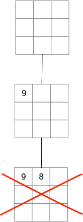

Recursive Guess and Check#
While recursion in object-oriented programs is often coupled with recursive (tree-like) data structures, it is not the only pattern. Another important recursive pattern is recursive guess-and-check, also called search. This kind of recursive pattern is often used to search for a way to apply several sequential operations to reach a state that satisfies some properties.
With recursive guess-and-check, we can imagine a sort of tree
in the history of states of the structure,
but it never exists all at once. Suppose we start with some
initial structure, and we perform an
operation intended to bring us closer
to the desired state. The operation is
just a guess … we perform it without
knowing for sure whether it is the
right operation.
Perhaps we determine that the new state is a dead end. We discard it and try another move.
The rejected state is discarded; it no longer exists. We only have the initial structure (or a way to recreate it) and the new structure based on a new guessed move.
Perhaps this move looks promising, or at least we cannot determine that it is a dead end. We make try another operation from it.
If we keep doing this, following guesses by more guesses, or reverting to prior states when we reach a dead end, our guesses trace out a tree even though the only structures that we are really keeping are the path from the root to the current guess. Eventually, if we have a systematic way of guessing all potentially useful moves and discarding dead ends, we find a sequence of moves to the desired solution.
Elements of Recursive Guess-and-Check#
To create a recursive guess-and-check function or method, we need:
(State) An initial state. This might be a chess position, or a Sudoku puzzle, or a Tic Tac Toe board.
(Moves) A finite (preferably small) set of possible operations or moves that could potentially lead to a solution. If we are programming a chess game, these would be legal chess moves. If we are programming a Sudoku solver, a ‘move’ would be choosing a value for some tile whose value has not been set. If we are programming an automated Tic-Tac-Toe player, a move would be placing a mark (X or O, depending on side) in an empty place.
(Choose) A way of choosing the next move. This could be a blind choice, or it could be based on some heuristic for choosing more promising moves. In Sudoku we might favor finding a value for a tile that has few possible values. In chess the heuristic choice might be the main part of the program. Deep Blue, the first chess computer to beat a human world chess champion in 1997, had a heuristic evaluation function in 8000 parts (Wikipedia article. A simple heuristic function for choosing tic-tac-toe moves can be found in method
choose_forin the sample code from a prior chapter.(Check) A way of determining whether a state is the solution we seek, or a hopeless dead end. A solution might be a victory in chess or tic-tac-toe, a complete and consistent grid in Sudoku. (In two-player games like chess and tic-tac-toe, we can check for a ‘win’ for either our own player or the opponent, and we may need to also recognize a draw.) If a Sudoku board is inconsistent (e.g., if it contains duplicate symbols in some row), then it is useless to continue; determining values of other tiles cannot fix it.
(Restore) A way of restoring a prior state. Since we are only guessing at a good move, which might turn out to be bad, we need a way of backing up and trying something else. Sometimes we can program an undo operation for each move, and keep just one complete state. Often we need a way to save and restore states.
Basic guess-and-check search#
Given the elements above, the basic recursive guess-and-check search goes something like this:
def guess-and-check(state) -> bool:
if the state is a solution:
return True
if the state is a hopeless dead end:
return False
save the current state
for each possible next move:
make the move, giving new state
if guess-and-check(new state):
return True
else:
restore to saved state
# We tried everything, and nothing worked
return False
The are several possible variations on the basic procedure above.
We might not have to try all possible next moves. In Sudoku, for example, it suffices to try all possibilities for one tile, because possibilities for other tiles can be explored in the recursive calls.
In two-player games like chess and tic-tac-toe, we actually alternate between trying to find our own best move and trying to find the opponent’s best move against us. A win for us is a loss for the opponent, and vice versa.
In very complex games like chess, instead of exploring one sequence of moves at a time, we explore several concurrently, and typically we cannot search any single path all the way to a conclusion but only to a state that seems favorable (according to the same heuristic functions we use to order our guesses).
An example: Magic Squares#
A magic square is a grid in which each cell contains a distinct positive integer and each row, column, and diagonal sums to the same value.
Let’s suppose we wanted to find a magic square with 9 tiles in which each row, column, and diagonal summed to 15. We might also keep a list of the values to be placed, so that they will be sure to be distinct if we place each value from the list.
Given a state, the moves we can try are finding a place for one of the values. Perhaps we start with 9.
We might try at first placing 9 in the corner. Then we make a recursive call to place the other tiles.
In the recursive call, we would first check whether it is a solution (it is not) or a hopeless dead end. Our check for hopeless dead ends might rely on the observation that if any row, column, or diagonal already sums to a value greater than the desired target value 15, placing more tiles cannot fix it (because all our tile values are positive). The board with a 9 in the corner is not hopeless according to this check, so we would go on and try to find a place for an 8. We might first try placing it in the next available position.
We make this move and make the recursive call. Again the recursive call first checks to see whether the position is a solution or hopeless. It is hopeless, because 9+8 is already greater than the target value 15.

This is a base case for the recursion: We return to the prior state and try another move.
We restore the prior state (empty board except for a 9 in the corner) and try another position for the 8. Again we make the recursive call, and again it finds the state hopeless. Return, restore, try another position, until finally we find that the board would not seem to be hopeless if we placed the 8 in a different row and column from the 9 and off the diagonal.
Since we judge this new position not hopeless,
we would make another recursive call to place the
seven, and so on. Eventually every sequence of
moves that starts with placing 9 in the corner
will lead to failure. The recursion will
return False all the way up to the first
place where we chose a position for the 9,
and start again to place the 8, the 7, and so on.
In this way we will eventually find a sequence of moves that leads to a solution.
Guess-and-Check for Sudoku#
The basic recursive guess-and-check for Sudoku can work essentially like the magic square finder. The essential elements for Sudoku are:
(State) The initial state is the Sudoku puzzle as we found it.
(Moves) The possible moves are candidate values for one tile. If we perform constraint propagation with the naked single and hidden single tactics as much as possible before resorting to guessing, we can select a tile with just a few candidate values.
(Choose) The next move is simply to try one of the candidate values on the selected tile. If the recursive call to solve the puzzle fails, we try the next, and so on. We only have to try values that are candidates for the tile, and we can focus on just the one tile and let the recursive calls take care of others.
(Check) To determine whether a new position is a solution or hopeless, we will check whether it is consistent (no duplicate tiles in any row, column, or block) and whether it is complete (no unknown tiles). In principle this is enough, but solving a puzzle might be slow. To speed it up, we will perform the constraint propagation of naked single and hidden single as far as possible before checking. We must be a little careful, though, because our previous assumption that every puzzle we are presented is solvable is no longer valid: Now we are trying puzzles with guesses, and some of the guesses are wrong!
(Restore) Because we are performing constraint propagation between guesses, we can’t restore the prior state just by changing the value of one tile. We will need to save the state of the Sudoku board before we begin making guesses about a tile value, and restore it to that prior value each time the recursive call returns
False. Since copying a whole board (without aliasing!) could be challenging, we could choose to save instead a representation like a list of strings from which the board can be restored. We don’t have to save everything about it as long as the missing information is easily restored.